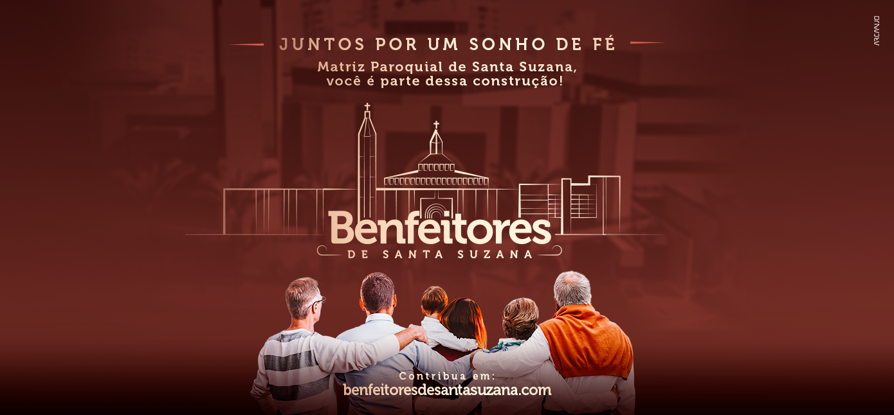
Avisos Paroquiais
MISSAS
SEGUNDA A SEXTA
18h - Capela da Imaculada - Rua Paulo Sérgio de Macedo, 197
SÁBADO
18h - Capela da Imaculada - Rua Paulo Sérgio de Macedo, 197
DOMINGO
8h00 - Capela da Imaculada - Rua Paulo Sérgio de Macedo, 197
10h30 - Comunidade São Paulo Apóstolo - Sede Social do SPFC - Embaixo portão 5
11h e 18h - Salão Paroquial - Rua David Ben Gurion, 777
18h - Comunidade Nossa Senhora das Graças - Exclusivo para moradores do Condomínio Portal do Morumbi
Transmissão pelo Canal do Youtube da Paróquia e Página do Facebook das missas dos Domingos às 18h e Solenidades
SECRETARIA PAROQUIAL
Terça a Sábado
8h30 às 12h e das 14h às 17h
Tel e WhatsApp:
(11) 3742-4754
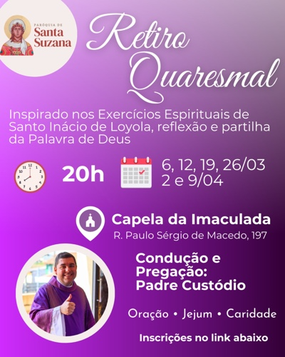
Ficha de InscriçãoVenha fazer parte do Coral Infantil da nossa Paróquia!
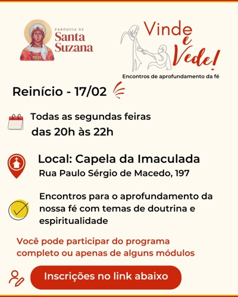
Venha Adorar o Senhor
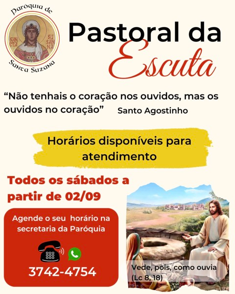
Horários disponíveis para atendimento
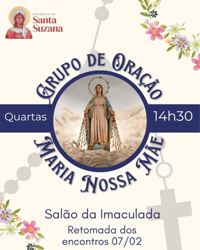
Quintas 21h30
Todas as terças-feiras às 20h30
Venha fazer parte do Coral da nossa Paróquia!
Comunidades
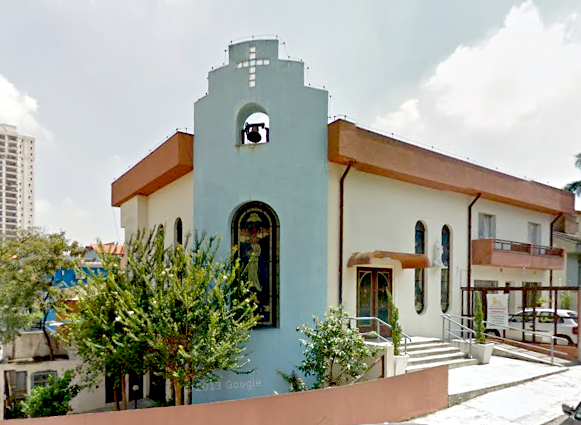
Imaculada Conceição
Rua Paulo Sérgio de Macedo, 197
Vila Sônia, 05639-040 São Paulo
Matriz Provisória
Missas
Segunda a Sábado: 18h
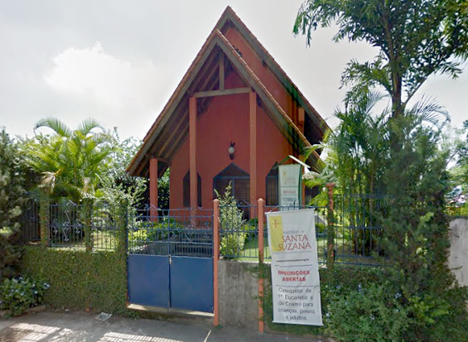
Santa Suzana
Rua David Ben Gurion, 777
Jd. Monte Kemel, São Paulo
Missas
Sábados: 20h (Caminho Neocatecumenal)
Domingo: 11h e 18h
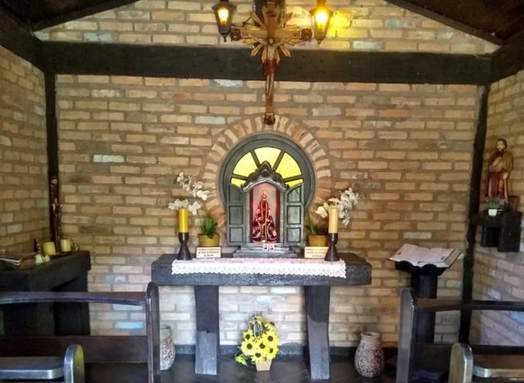
São Paulo Apóstolo
Av. Jules Rimet, Portão 5 SPFC
Morumbi, 05653-070 São Paulo
Missas
Dom: 10h30
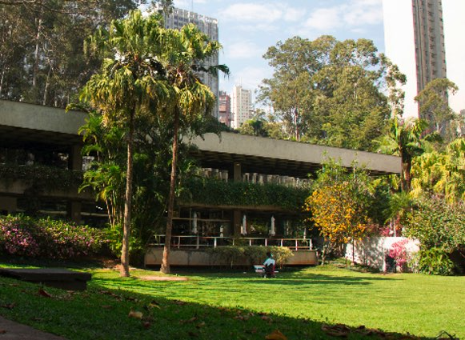
Nossa Senhora das Graças (Portal do Morumbi)
Missas
Domingo: 18h
Padres
Padre Manoel Corrêa Viana Neto
Nasceu no dia 3 de julho em Formosa - GO. Aos 17 anos sentiu o chamado para ser sacerdote.
Frequentou o Grupo de Orientação Vocacional – GOV – da Arquidiocese de São Paulo, sendo na época crisnado pelo Cardeal Dom Paulo Evaristo Arns.
Aos 25 anos entrava no Mosteiro de São Bento, onde ficou por aproximadamente cinco anos. Sentindo a necessidade de um trabalho mais próximo do Povo de Deus, pediu dispensa dos votos e fixou-se na Diocese de Campo Limpo, onde, aos 29 de junho de 1996.
No ano de 2011 foi convidado para fazer parte da Venerável Ordem Equestre do Santo Sepulcro de Jerusalém como Cavaleiro.
Desde 2015 exerce a função de Vigário Episcopal da Região 4 (Foranias Morumbi e Taboão da Serra).
Padre José Bortolini
Pe. José Bortolini nasceu em Bento Gonçalves (RS) aos 15 de Abril de 1952. Foi ordenado Presbítero por Dom Francisco Manuel Vieira, então Bispo da Região Episcopal Osasco (São Paulo) no dia 4 de dezembro de 1977.
É Mestre em Sagrada Escritura pelo Pontifício Instituto Bíblico de Roma, e escreveu vários livros na área bíblica. Colaborou na preparação das principais edições de Bíblia em língua portuguesa.
Frei Guilherme Pereira Anselmo Júnior, sja
Nasceu no dia 21 de julho de 1971, em São Paulo - SP
Na juventude, sentiu-se chamado e trilhou um breve caminho na vida consagrada e monástica. Para cuidar da família, saiu e foi trabalhar e estudar. Cursou Letras, habilitando-se em Língua Grega Antiga. Trabalhou por anos no comércio internacional, em gerenciamento de importação, numa empresa grega.
Retornando à vida consagrada com 30 anos, fez-se frade inaciano. Cursou Filosofia/Teologia. Foi ordenado padre em 2012 na Basílica Nossa Senhora da Assunção, junto ao Mosteiro de São Bento, em São Paulo - SP.
Concluiu Mestrado em Teologia (Bíblia) na PUC/SP em 2015 e, desde então, é professor.
Matriz Paroquial de Santa Suzana

Descrição geral do projeto
A Matriz Paroquial de Santa Suzana foi projetada para atender às necessidades pastorais da nossa Paróquia.
Entre as várias opções arquitetônicas e estéticas, foi escolhida a que melhor demonstra a reconciliação do Concílio Vaticano II e, ao mesmo tempo, apresentasse uma obra bela e harmosa entre os seus edifícios.
O projeto do projeto arquitetônico foi, portanto, o desejo de construir uma Matriz Paroquial que possa ser um sinal visual e perceptível da beleza da vida cristã e, assim, "guiar a chamar toda a humanidade para a casa de Deus" (SC, 1).
Assim, a matriz paroquial possui três edifícios principais:
- A Matriz Paroquial: Deus no centro, assim como a Igreja é a meta para a qual se encaminha a ação do Evangelho e a busca das razões de crer.
- O Centro Pastoral: com espaços próprios para catequese, reuniões, orações e pequenas celebrações, posto que, no homem, antes de poderem participar na Liturgia, é preciso que sejam chamados à fé e à conversão (SC, 9).
- O Centro Social e de Formação para o Trabalho (Cáritas): onde de forma concreta, "o espírito consistirá da Igreja e o que é o seu dever de caridade, de piedade e apostolado, onde os cristãos possam receber que é o seu dever de caridade" (SC, 10).
Juntos, edificamos o Reino de Deus!
Seja Um Benfeitor de Santa Suzana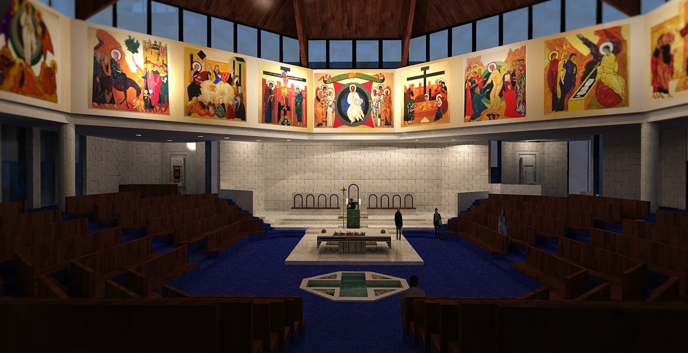
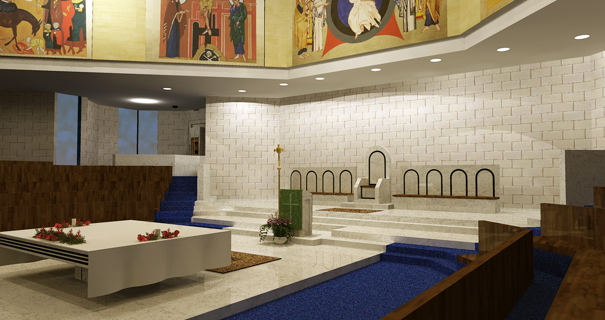
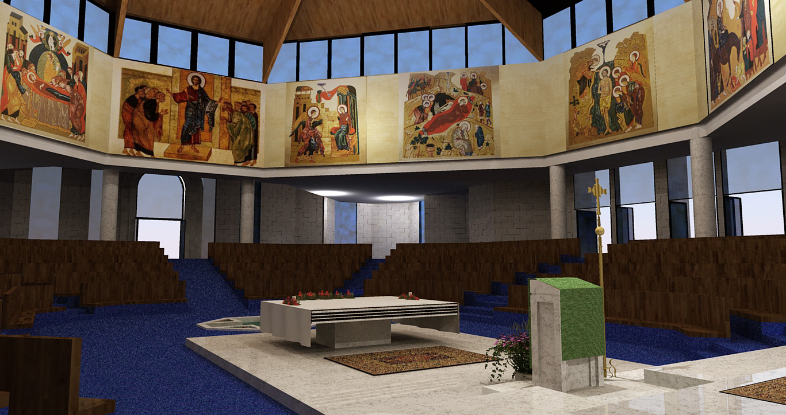
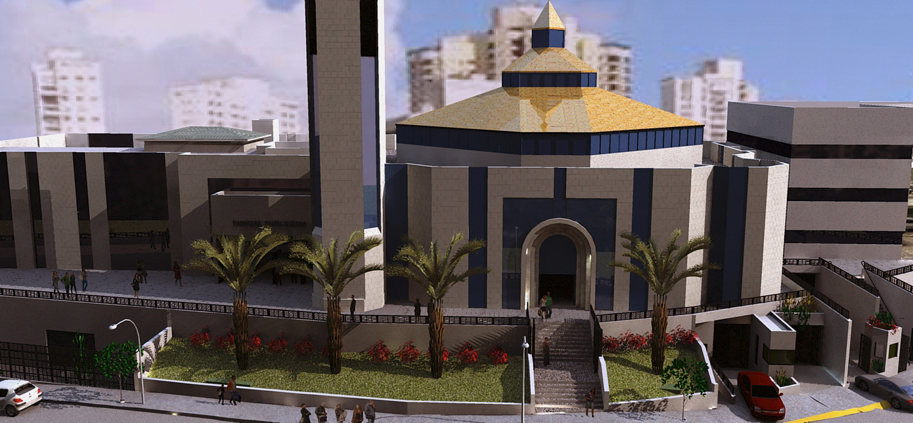
Plantas
(Clique nas figuras para vê-las ampliadas)
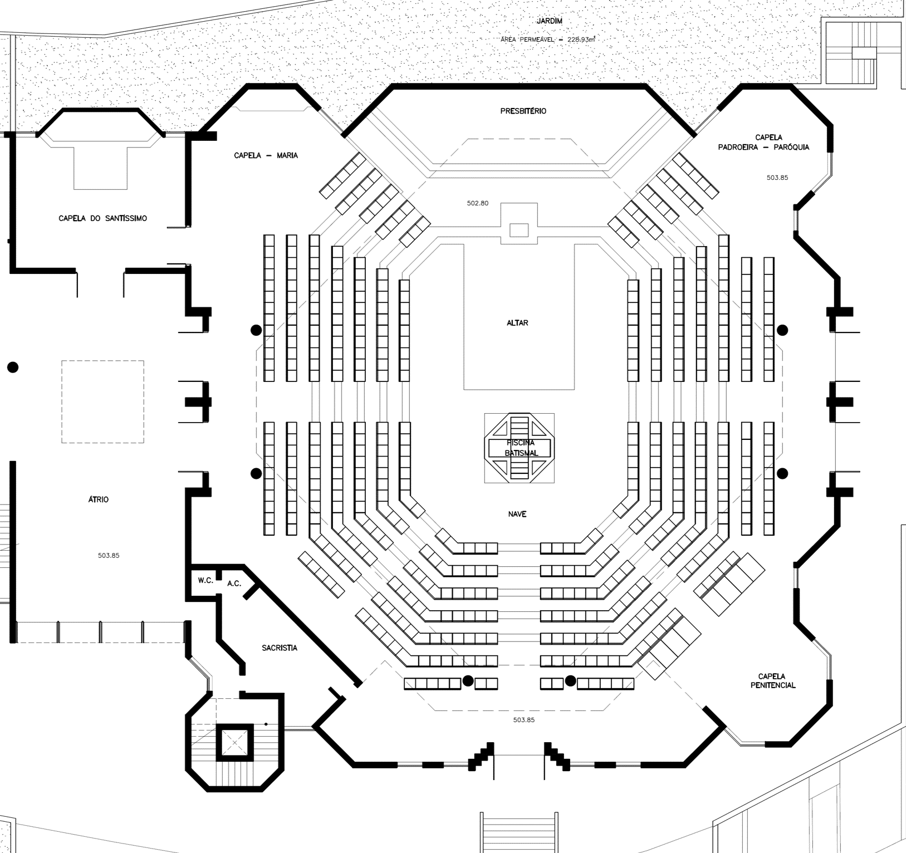
Matriz Paroquial
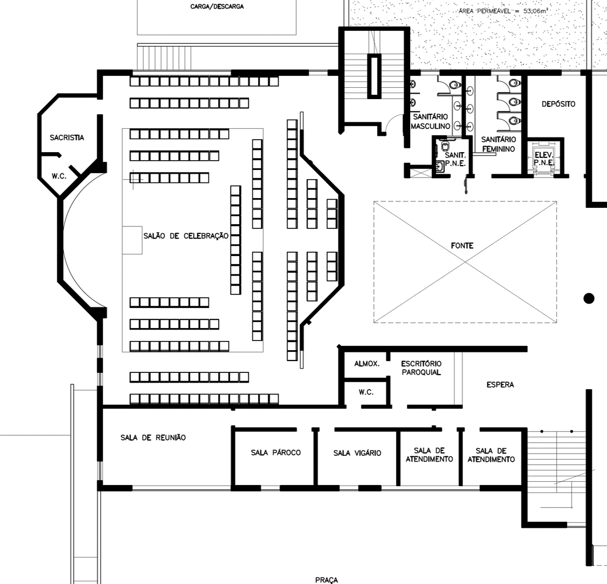
Centro Pastoral Térreo
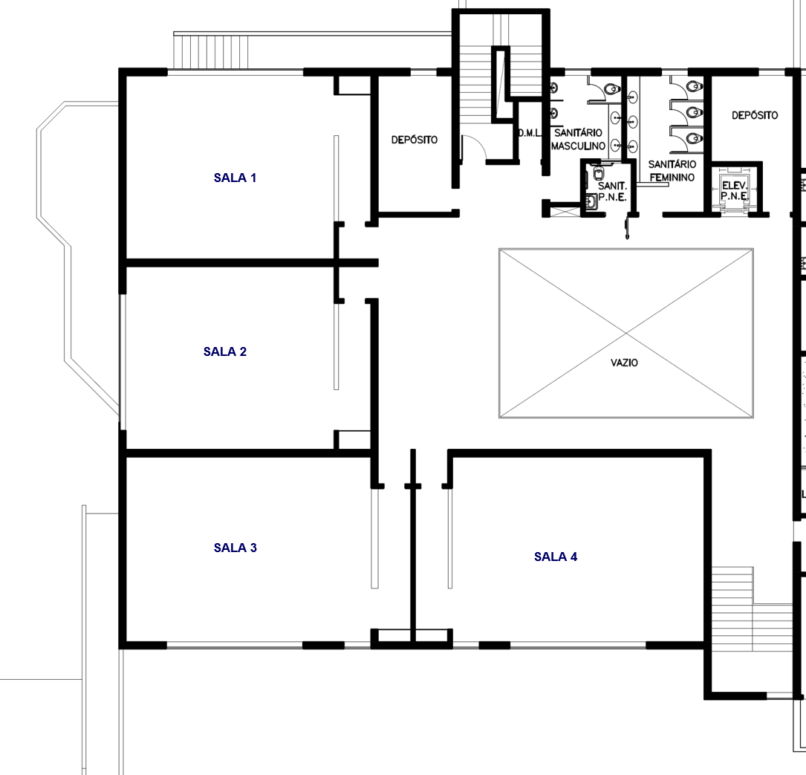
Centro Pastoral 1º Andar
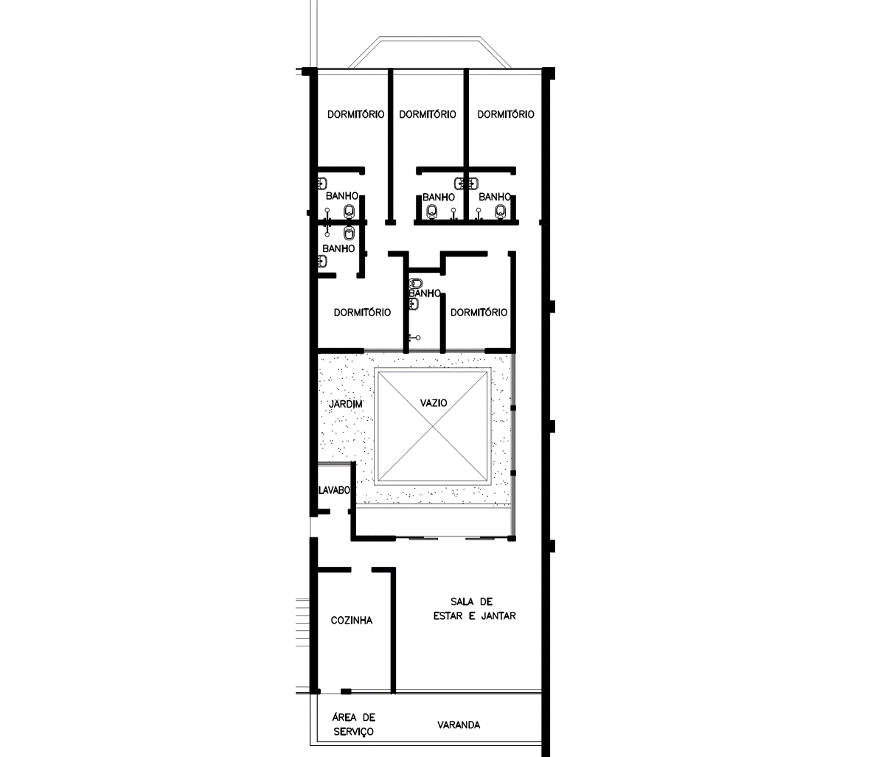
Casa Paroquial
Detalhes da arquitetura da Igreja Matriz
A Matriz Paroquial tem capacidade para 600 pessoas. Ao seu lado e integrada a ela está a Capela do Santíssimo e um hall de circulação que integra a Matriz ao Centro Pastoral. Faz parte ainda da Matriz e a torre com o campanário, referência de sacralização e chamamento para os fiéis.
Internamente, a Matriz Paroquial foi desenhada de modo a oferecer um espaço celebrativo organizado de modo que a assembleia reunida represente o Corpo Místico de Cristo e de modo a promover uma participação ativa dos fiéis na liturgia, em particular na celebração da Eucaristia, como membros de uma comunidade e não como meros espectadores.
Assim, a nave central é organizada de modo a seguir, não no retorno, a figura simbólica do corpo humano.
- A sede da presidência representa a cabeça do Corpo.
- O ambão, de onde se proclama a Palavra de Deus, representa o coração.
- A mesa eucarística situa-se no estômago, bem ao centro, destacando a reflexão pascal.
- A pia batismal em um segundo, na parte "nas tripas".
- O altar, a assembleia, como membros do corpo, dispõe-se ao redor das demais elementos, em anfiteatro, facilitando a visibilidade de todo e de cada seja visível.
Acima da assembleia, estão representados os modelos da nossa salvação, na chamada coroa histórica. Acima dos santos, janelas, que nos dão seja visível ver o céu.
Padroeira
História
Suzana era prima de Gaio Aurélio Diocleciano, que se tornou imperador em 284. Suzana, tal como o imperador, era natural da Dalmácia e, segundo a tradição, tinha três tios sendo eles Caio, Máximo e Cláudio. Caio e Gabínio eram padres cristãos e Suzana também seguia a religião cristã numa época em que o Cristianismo não era ainda legalmente reconhecido pelo estado romano. Em dezembro de 283, Caio foi eleito bispo de Roma, e serviu-a como Papa até à data da sua morte, em abril de 296.
No Império Romano, cada imperador deveria indicar um governador menor, também conhecido como "César", que o iria suceder em dias mais tarde. Diocleciano anunciou o nomeado Galério e na primavera de 290. Diocleciano anunciou o nomeado Galério e sua prima Suzana uma vez que pretendia que o seu jovem sucessor se casasse com ela. Suzana, que tinha feito o voto de virgindade, recusou a proposta de casamento, decidiu que teve a aceitação do seu pai e do seu tio Caio, então Papa. Os tios não cristãos de Suzana não concordaram com a recusa e das razões, ficou furioso e ordenou a sua execução.
O jovem general Maximiano, com o intuito de a persuadir a casar, no entanto a insistente recusa de Suzana levantou a suspeita de que ela e outros membros da sua família fossem cristãos. Suzana recusou confirmando que era cristã e que o seu compromisso com Cristo era mais importante do que o casamento com o César. Quando Maximiano voltou conhecimento da recusa e das razões, ficou furioso e ordenou a sua execução, com um acto de adoração a deus Júpiter. Suzana recusou confirmando que era cristã e que o seu compromisso com Cristo era mais importante do que o casamento com o César. Quando Maximiano voltou conhecimento da recusa e das razões, ficou furioso e ordenou a sua execução.
Suzana foi decapitada[6] em sua casa e o seu pai Gabínio foi preso e passou fome até morrer na prisão. A restante família foi martirizada. O Papa Caio, que conseguiu esconder-se nas catacumbas.
Em 330 foi construída uma basílica sobre a casa de Suzana, hoje incialmente denominada de Basílica de São Caio em honra do Papa Caio que tinha residido tendo os corpos de Suzana e seu pai sido transladados das catacumbas para o interior da igreja. No ano 590, o Papa São Gregório, em reconhecimento ao culto devocional que havia crescido ao redor do túmulo de Santa Suzana, renomeou a basílica como Basílica de Santa Susana.
O dia da festa de Santa Suzana é 11 de agosto.
Santa Suzana Pelo Mundo
Conheça outras igrejas de Santa Suzana pelo mundo
Oração
Ó Deus, que vos alegrais com aqueles que vos servem de coração simples e puro.
Pela intercessão de Santa Suzana, Virgem e Mártir, fazei que nós vos sirvamos livres do fermento do mal que nos circunda, pratiquemos o Evangelho com palavras e ações.
Por nosso Senhor Jesus Cristo, vosso Filho, que é Deus e convosco vive e reina na unidade do Espírito Santo, por todos os séculos dos séculos.
Amém!
Ladainha em Honra de Santa Suzana
Senhor, tende piedade de nós.
Jesus Cristo, tende piedade de nós.
Senhor, tende piedade de nós.
Jesus Cristo, ouvi-nos.
Jesus Cristo, atendei-nos.
Pai celeste, que sois Deus, tende piedade de nós.
Jesus, Redentor do mundo, que sois Deus, tende piedade de nós.
Espírito Santo, que sois Deus, tende piedade de nós.
Santíssima Trindade, que sois um só Deus, tende piedade de nós.
Santa Maria, Rainha das virgens, rogai por nós.
Santa Suzana, rogai por nós.
Santa Suzana, modelo da pureza, rogai por nós.
Santa Suzana, perseguida e flagelada, rogai por nós.
Santa Suzana, decapitada por uma espada, rogai por nós.
Santa Suzana, consolada pelo amor de Deus, rogai por nós.
Santa Suzana, amparada pelos anjos para continuar como virgem, rogai por nós.
Santa Suzana, que preferistes a morte aos esplendores do trono, rogai por nós.
Santa Suzana, que recusastes um casamento com um imperador, rogai por nós.
Santa Suzana, que recusastes um casamento com um imperador, rogai por nós.
Santa Suzana, que derramastes vosso sangue na tribuna dos mártires, rogai por nós.
Santa Suzana, que recusastes publicamente adorar o deus romano, rogai por nós.
Santa Suzana, que derramastes vosso sangue na tribuna dos mártires, rogai por nós.
Santa Suzana, cheia de abundantes graças desde o berço, rogai por nós.
Santa Suzana, fiel criança de Jesus, rogai por nós.
Santa Suzana, modelo da juventude, rogai por nós.
Santa Suzana, templo da mais íntima humildade, rogai por nós.
Santa Suzana, ilustre emissária enviada por Deus, rogai por nós.
Santa Suzana, vítima da castidade por amor a Jesus, rogai por nós.
Santa Suzana, exemplo de força e coragem, rogai por nós.
Santa Suzana, espelho das mais heróicas virtudes, rogai por nós.
Santa Suzana, Alma inflamada no amor divino, rogai por nós.
Santa Suzana, valioso auxílio em todas as necessidades, rogai por nós.
Cordeiro de Deus, que tirais os pecados do mundo, perdoai-nos Senhor
Cordeiro de Deus, que tirais os pecados do mundo, ouvi-nos Senhor
Cordeiro de Deus, que tirais os pecados do mundo, tende piedade de nós.
V. Rogai por nós, Santa Suzana,
R. Para que sejamos dignos das promessas de Cristo.
Pastorais
Conheça as pastorais da nossa paróquia
Pastoral Familiar
Funções
Animar todas as ações que promovam a vida, desde a sua concepção até o seu termo na velhice e a dignidade família, tais como:
- Encontros periódicos de famílias, desenvolvendo temas afins;
- Estudo e aprofundamento dos documentos, encíclicas, cartas, etc. do Magistério;
- Missa mensal da família solidária;
- Semana Nacional da Família em agosto;
- Dia das Mães em maio e Dia dos Pais em agosto;
- Encontro de namorados;
- Encontro de Preparação para a Vida Matrimonial (semestral) para os noivos;
- Encontro de Casais com Cristo - ECC (anual);
- Retiro Bom Pastor, para casais de segunda união (anual);
- Acompanhamento e aconselhamento de casos difíceis.
Pastoral do Batismo
Funções
Como Pastoral eminentemente evangelizadora, tem como função principal: abrir as portas da Igreja para todos os que batem à sua porta, acolhendo-os com amor e carinho.
- Preparar os pais e padrinhos para o Batismo
- Ajudar os pais e padrinhos a compreender o significado do Batismo
- Celebrar o Sacramento do Batismo
Pastoral Catequética
Finalidade
A catequese é um processo de educação pessoal e comunitário, progressivo, permanente, orgânico e sistemático da fé", já dizia o Diretório Nacional de Catequese (nº 4). Nesse sentido a função da Pastoral Catequética é:
- "Fazer com que alguém se ponha, não apenas em contato, mas em comunhão, em intimidade com Jesus Cristo" (DGC n. 80);
- "Aprofundar o primeiro anúncio do Evangelho, isto é, levar o catequizado a conhecer, acolher, celebrar e vivenciar o mistério de Deus, manifestado em Jesus Cristo, que nos revela o Pai e nos envia o Espírito Santo. Conduz à entrega do coração a Deus, à comunhão com a Igreja, corpo de Cristo e à participação em sua missão." (DNC n. 43);
Tarefas
- Favorecer o conhecimento da fé;
- A educação litúrgica;
- A formação moral;
- Ensinar a rezar
- A educação para a vida comunitária;
- A iniciação à missão;
Tudo isso vivido através de dois grandes meios (DGC n. 87):
- A transmissão da mensagem evangélica
- A experiência da vida cristã
Funções
- Incentivar a catequese familiar;
- Promover a catequese comunitária nas suas diversas fases:
- Pré-catequese;
- Catequese de Iniciação à Vida Eucarística;
- Catequese da Perseverança;
Animadora
Leticia Ribeiro Guglielmi
Email: catequese@santasuzana.org.br
Pastoral da Liturgia/Ministros
Finalidade
"A Pastoral Litúrgica é o modo de organizar a comunidade, visando a formação litúrgica, à preparação e à realização de celebrações". (Pe. Serginho Valle, SCJ in Pastoral Litúrgica, p. 15).
Sua função pode estar expressa da seguinte forma:
- Formar agentes novos para atuar na Pastoral Litúrgica
- Formar a comunidade através de:
- Dias formativos
- Momentos de catequese litúrgica (antes ou após a missa, por exemplo);
- Preparar as celebrações solenes e paroquiais, como também para as equipes das comunidades, as dominicais e dos respectivos padroeiros;
- Em comunhão com a Pastoral da Comunicação, elaborar cartazes, faixas, banners, etc., para a divulgação dos eventos litúrgicos da Paróquia.
Ela está dividida em três equipos:
- Equipe Litúrgica: tem como finalidade organizar todo o trabalho litúrgico da Paróquia: missas, celebrações catequéticas, etc. Há também as equipos das comunidades
- Equipe de Celebração: são as encarregadas de fazer acontecer a celebração. Trabalham sempre em sintonia com o pessoal da música e com o padre. Deve haver uma Equipe de Celebração para cada missa e evento litúrgico (batizados, casamentos, etc.).
- Equipe do Ministério da Música: sob a responsabilidade da Pastoral da Música está à frente da música nas celebrações.
Ministros
Através de uma formação adequada o fiel leigo pode servir ao Senhor nas diversas áreas das celebrações da Comunidade, tais como:
- Ministro Extraordinário da Comunhão Eucarística
- Ministro da Palavra
- Ministro da Acolhida
Animadores
Maria de Fátima (Dinha)
Email: dinhaprosperi@terra.com.br
Mara Paulucci
Email: mcpaulucci@gmail.com
Pastoral dos Jovens
Funções
Promover a participação consciente, ativa e efetiva dos jovens na Paróquia através de:
- Grupo de Jovens;
- Grupo de Oração;
- Catequese Crismal (Margarita e Samir);
- TLC - Treinamento de Liderança Cristã (Aline e Marconi);
- Eventos que promovam a comunhão e integração dos jovens na comunidade;
- Participação nas atividades sociais, assistenciais e caritativas da Paróquia, principalmente no voluntariado da Cáritas;
- Inserção nas diversas pastorais e serviços da Paróquia;
- Formação para a evangelização e missão na sociedade.
Catequese de Adultos
Funções
- Promover encontros de formação bíblica e litúrgica para paroquianos e futuros ministros.
- Preparar encontros periódicos que levem o adulto a se preparar para o Sacramento do Batismo, da Vida Eucarística e do Crisma.
Pastoral das Coroinhas
Funções
Promover entre as crianças e os jovens o amor à liturgia e ao serviço no culto divino, através de:
- Encontros periódicos de espiritualidade, formação doutrinária e cultural
- Participação nos eventos litúrgicos da Paróquia, principalmente na Santa Missa
- Integração com a catequese através do testemunho de vida
- Apostolado e missão: criança evangelizando crianças, jovem evangelizando jovens
Pastoral da Comunicação
Funções
Promover os canais de comunicação, visando a fraterna união dos irmãos na Paróquia e fora da Paróquia, sempre à luz do Evangelho, ou seja, de Jesus Cristo, o grande Comunicador do Pai. Isto se fará através de:
- Boletim informativo
- Site da Paróquia
- Redes Sociais
Pastoral do Dízimo
Funções:
A Pastoral do Dízimo tem como função primordial levar o paroquiano a assumir conscientemente sua participação ativa na comunidade, isto é, sentir-se membro de uma comunidade viva.
Ela possui 3 dimensões importantes:
- Religiosa: auxiliar na manutenção do culto, na subsistência material da Paróquia, no serviço das pastorais, na subsistência do sacerdote, na manutenção de funcionários, etc.
- Missionária: levar o fiel leigo a ser sinal de salvação, isto é, como batizados que são, também se constituem em verdadeiros missionários. Levar o fiel leigo a compreender que sua participação na comunidade cristã também é uma forma de colaborar com as ações missionárias e evangelizadoras da própria Paróquia.
- Social: promoção humana, principalmente daqueles que estão em situação de risco (pobreza, violência, drogas, analfabetismo, etc.)
Além disso, ocupa-se:
- Com a administração do dízimo nas comunidades;
- Com a busca de novos dizimistas através principalmente da conscientização do que vem a ser o Dízimo;
- Com a promoção dos dizimistas através de sorteios de livros, cds e outros brindes por ocasião do "Final de Semana do Dízimo" (2º final de semana) nas comunidades;
- Com a promoção do "Mês do Dízimo" em novembro;
- Em ser um canal de informações da vida da Paróquia aos dizimistas.
Animadores: Carlos e Maria Tereza
Email: teodierna@hotmail.com
Pastoral da Saúde
Funções:
Segundo o Pe. Anísio Baldessin (in Como fazer Pastoral da Saúde?, p. 32-33), a "Pastoral da Saúde tem como função defender, promover, preservar, cuidar e celebrar a vida, tomando presente a sociedade de hoje a missão libertadora de Cristo no mundo da saúde."
- Solidária: vivência da solidariedade com os doentes e sofredores nos hospitais, domicílios e comunidades
- Comunitária: capacitação de agentes multiplicadores de saúde e criação de grupos comunitários que atuem no campo da prevenção, promoção, educação e humanização
- Político-institucional: atuação política junto aos órgãos e instituições, públicos e privados, que prestam serviços e formam profissionais na área da saúde
Atuação:
- Inculturar a Boa Nova do Evangelho no Setor da Saúde
- Levar todas as pessoas a compreender o verdadeiro sentido da vida
- Promover o atendimento humano e espiritual do doente em domicílio e no hospital
- Prestar assistência aos enfermos de hospitais
- Prepararem os doentes e seus familiares para a visita do respectivo pároco
- Organizar missas para enfermos na Paróquia
- Preparar a celebração da Unção dos Enfermos aos doentes e idosos
- Fazer sentir a todos a importância da intimidade com Deus e da oração e participação da Eucaristia
- Promover encontros, cursos e palestras para os agentes sobre os Documentos da Igreja e sobre a espiritualidade cristã
- Conscientização da importância do ecumenismo e da religiosidade popular
- Conscientizar a todos sobre o valor inestimável da saúde e o dever de evitar a doença
Pastoral da Música
Funções:
- Preparar e formar músicos para servir à liturgia;
- Formar os músicos nos conceitos litúrgicos de música;
- Oferecer momentos de espiritualidade musical;
- Manter as celebrações bem ordenadas quanto à escala de ministérios de música;
- Organizar e ordenar os instrumentos necessários para a boa sonorização do espaço celebrativo.
Animadora: Tereza Pereira
Email: musica@santasuzana.org.br
Pastoral de Evangelização
Caminho Neocatecumenal
É um "Itinerário de formação católica, válida para a sociedade e para os tempos de hoje". (Papa João Paulo II in Estatuto definitivo do Caminho Neocatecumenal, Título I, a. 1º, § 1º. 2008).
Responsável: Roberto Amadeu e Wilma
Email: roberto.amadeu_ra@yahoo.com.br
MPP – Missão Popular Paroquial
A partir de uma formação dos fiéis que sentem no coração o desejo de anunciar a Boa Nova de Jesus Cristo, sair em missão pelas ruas do território da paróquia, bem como nos edifícios e condomínios, evangelizando e convidando as pessoas a participarem de nossa paróquia.
Responsável: Matusalém e Thatiana
Email: matusalem.silva@yahoo.com.br e tathianabarbon@yahoo.com.br
Movimentos
Apostolado da Oração
Missas todas as primeiras sextas feiras do mês às 8h na Imaculada e às 20h na Santa Suzana seguidas de Adoração ao Santíssimo.
Animadora: Ana Cristina
Email: anacristinanam@hotmail.com
Filhas do Imaculado Coração de Maria
Missas todos os primeiros sábados do mês às 8h na Imaculada
Maria de Fátima (Dinha)
Email: dinhaprosper@terra.com.br
Maria do Rosário (Zaia)
Email: zaiagal@terra.com.br
Grupo de Oração Maria Mãe
Reuniões todas as quartas feiras às 14h30 no salão da Imaculada
Rosa Lucia Angelini
Email: rosa_angelini@hotmail.com
Grupo de Oração dos Jovens
Quinta-feira à noite
Bruno Santoro
Organismos
Cáritas de Santa Suzana
Site Oficial
Presidente: Dom Emanuel Torres
Email: frafer.emmanuel@gmail.com
Vice-Presidente: Alcione Bravo
Email: alcionebravo@uol.com.br
Coordenadora: Ione Santoro
Email: ione@galeto.com.br
CPAE - Conselho Paroquial para Assuntos Econômicos
Pe. Manoel C. Viana Neto
SSR - Santa Suzana Runners
Através de atividades desportivas, culturais e de formação (palestras sobre saúde e bem-estar, conferências, mesa-redondas, etc.), buscar não somente ter uma vida espiritual saudável, mas também um corpo saudável!
Matusalém e Tathiana
Email: matusalem.silva@yahoo.com.br e tathianabarbon@yahoo.com.br
Comissão de Obras
Comissão composta do Pároco e dos membros da comunidade paroquial que acompanham as obras e colaboram para a captação de recursos.
Sebastião Burm
Email: sebastiao@burm.com.br
Rede Communio
Rede formada por leigos católicos, coordenada por leigos católicos, voltada para o serviço às necessidades do próximo.
Ivan, Taty e Cristian
Email: ivan@redecommunio.com.br
WhatsApp: (11) 99578-5878
Telefone: (11) 3743-3007
RTSS - Rede de Talentos Santa Suzana
Prestar assistência a desempregados e empreendedores de nossa comunidade, através de ferramentas de apoio (Linkedin, Facebook, etc.), bem como oferecer capacitação, de modo a ampliar as oportunidades para o mercado de trabalho e de negócios.
Paulo Lisboa
Email: paulomarcellisboa@gmail.com
Nossa História
A Paróquia Santa Suzana é um lugar sagrado onde a comunidade se reúne para celebrar a fé, compartilhar esperança e viver o amor de Cristo. Nossa missão é servir a comunidade através da oração, dos sacramentos e do serviço compassivo.
Santa Suzana, nossa padroeira, é um exemplo de fé inabalável e coragem. Inspirados por seu testemunho, buscamos viver os valores do Evangelho em nossa vida diária.
Conheça nossa comunidade →Horários de Missas
Venha celebrar conosco
Segunda a Sexta
7h00 - Missa Matinal
19h00 - Missa Vespertina
Sábado
18h00 - Missa Vespertina
(Antecipa o Domingo)
Domingo
8h00 - Missa Matinal
10h00 - Missa Solene
19h00 - Missa Vespertina
Próximos Eventos
Participe das atividades da nossa comunidade
Catequese para Adultos
Encontro semanal de formação e reflexão sobre a fé católica.
Quartas-feiras às 20h00
Grupo de Jovens
Encontro de jovens para oração, partilha e atividades comunitárias.
Sábados às 16h00
Adoração ao Santíssimo
Momento de oração e contemplação diante do Santíssimo Sacramento.
Sextas-feiras às 19h30
Ação Social
Distribuição de alimentos e roupas para famílias necessitadas.
Primeiro domingo do mês às 14h00
Hub Paroquial
Conecte-se com a comunidade de forma digital
Faça parte do nosso Hub Digital
O Hub Paroquial é o seu espaço digital para se conectar com a comunidade, acessar conteúdos exclusivos, gerenciar suas contribuições e participar ativamente da vida paroquial.
Inscrições em Eventos
Inscreva-se facilmente em retiros, encontros e atividades paroquiais
Conteúdo Exclusivo
Acesse reflexões, catequeses e materiais de formação
Comunidade Conectada
Interaja com outros paroquianos e participe de grupos
Acesse o Hub
Ainda não tem uma conta? Cadastre-se gratuitamente e faça parte da nossa comunidade digital!
Entre em Contato
Estamos aqui para servir você
Informações de Contato
Endereço
Rua David Ben Gurion, 777
Jardim Monte Kemel - São Paulo/SP
CEP 05653-070
Telefone
(11) 3742-4754
contato@santasuzana.org.br
Horário de Atendimento
Terça a Sábado: 8h30 às 12h00 e 14h00 às 17h00
Domingo e Segunda: Fechado